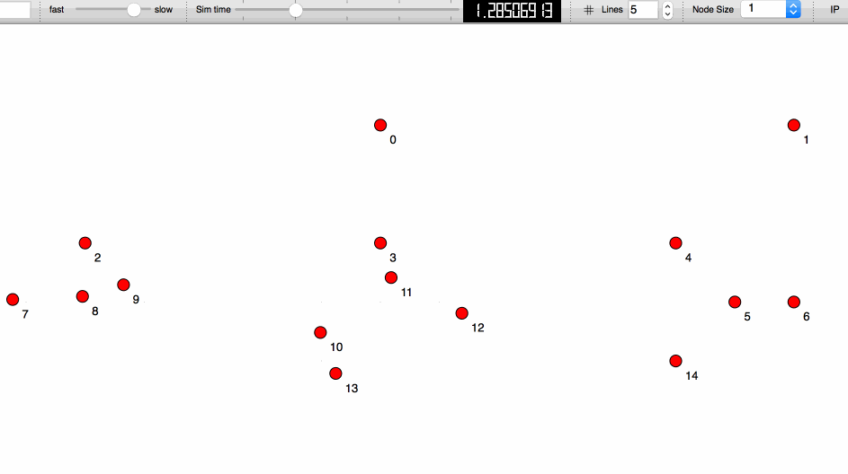
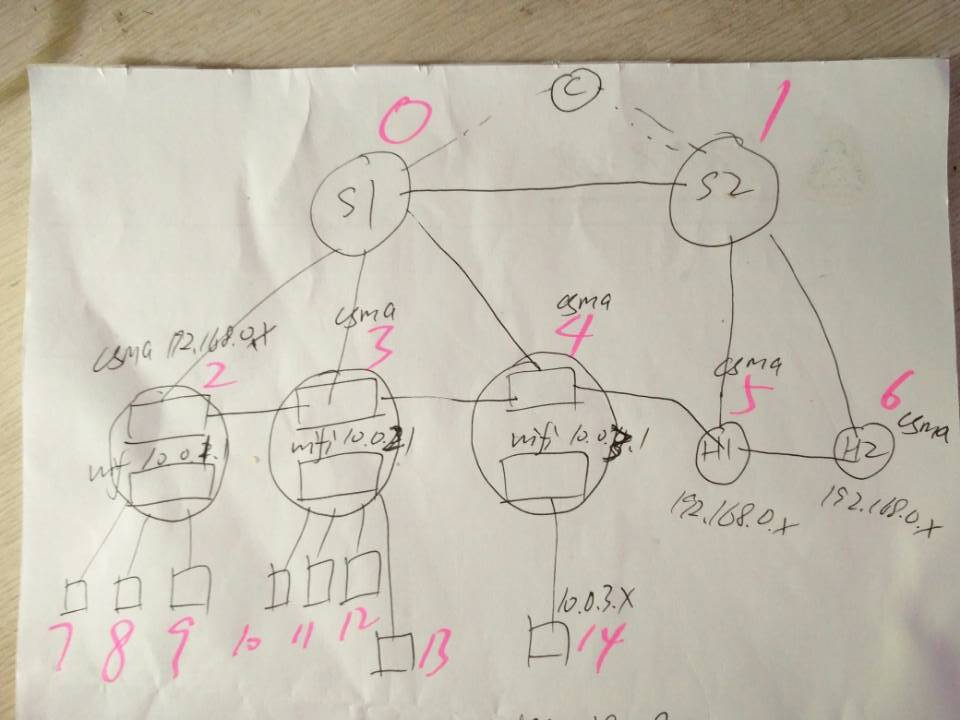

Detailed network topology is depicted in the top of the file goal-topo.cc.

Note:
1. node-2,3,4,5,6 are in the same csma network(192.168.0.0/24).
2. node-2,7,8,9 are in the same wirelss network(10.0.1.0/24).
3. node-3,10,11,12,13 are in the same wirelss network(10.0.2.0/24).
4. node-4,14 are in the same wirelss network(10.0.3.0/24).
0.0;192.168.0.8) starting at time 1.0 stopping at time 5.0;10.0.3.2) starts at time 2.0 stopping at time 5.0, during which four UDP packets are sent from UdpClient; 5.0;The 802.11 beacons are present all through the simulation process since the simulation starts, but they are not what we focus on here. We focus on the UDP packets.
At time 1.0, the UdpServer starts. Then at time 2.0, the UdpClient starts. It sends ARP requests to get the destination's physical address before it sends the UDP packet.All in all, finally the UdpClient(at port#49153) has sent the UDP packet to the UdpServer(at port#9), and the UdpServer(at port#49153) has sent the UDP packet back to the UdpClient(at port#9). We could load the goal-topo.xml in NetAnim to analyze the detailed process
More detailed description of this process is made later.